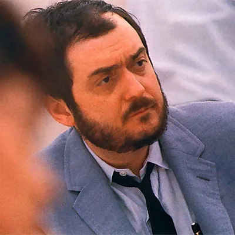

|  |
Stanly KubrickStanly kubrick is a directorStanley Kubrick was an American film director, producer and screenwriter . Widely considered one of the greatest filmmakers of all time, his films—almost all of which are adaptations of novels or short stories—cover a wide range of genres and feature innovative cinematography, dark humor, realistic attention to detail and extensive set designs. |
| Year | Movie Name |
|---|---|
| 2001 | A space Oddyssee |
| 1956 | Lolita |
| 1965 | A clock work orange |
|
|